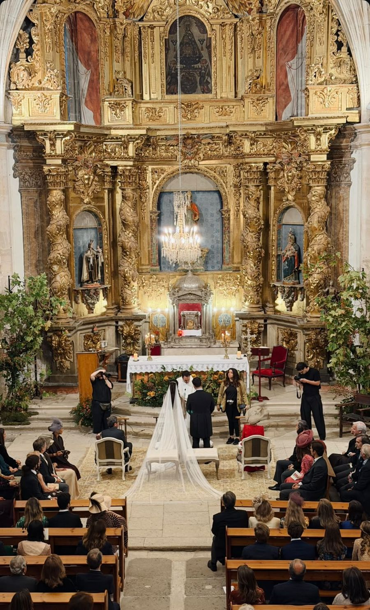

Tocad el círculo de cada parada cuando la hayáis hecho. Cada parada tiene su mapa y un consejo escondido en el “+”.
Si algo se tuerce
- 1Niebla en el puente. Alargad el paseo por Crissy Field; a media mañana suele levantar.
- 2Sin Uber en Battery Spencer. No esperéis más de 10 minutos. Saltadla y bajad directos a Sausalito.
- 3El ferry no encaja. Uber de vuelta por el puente, unos 30 minutos.
- 4Cansados a media tarde. Saltad Twin Peaks y volved antes al hotel. La noche en Chinatown y North Beach queda a un paseo.
